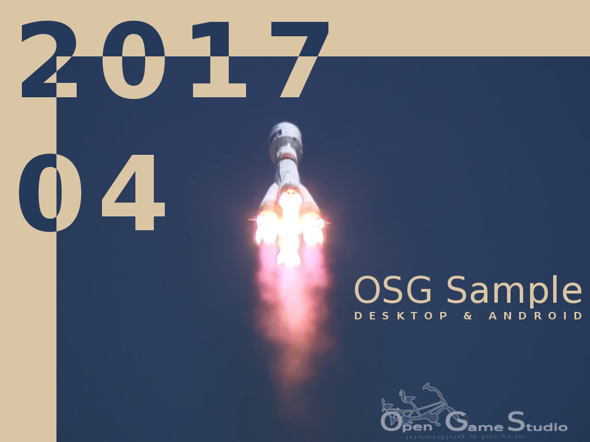

2018-01-26 00:00

This article describes the start of Mahjong game recreation.
Plan
We started Mahjong recreation endeavour by composing a brief plan to get gameplay with minimal graphics:
Just like any other plan, this one looked fine at first sight. However, once you get down to work, new details start to come out. This plan was no exception. Below are a few problems that came out during development.. . .
2017-12-31 22:00

So, the year 2017 is approaching its finale, the year's results have already been summed up. We're going to take a break from igniting the fireworks or preparation of the champagne so that we can designate our goal for the following year.
As it may be clear from other articles on the site, half of our plans in 2017 were destined to be completed at least approximately as we assumed. The other half was changed significantly.
During the year, people joined the team and left it. As a result, we meet the end of the year with exactly the same team as 365 days ago. It made us think. A lot. But We'll save the story for another time.. . .
2017-11-22 00:00

It's time to step back to see our accomplishments in 2017 and how they connect to the overall goal of Opensource Game Studio project.
Brief history
Opensource Game Studio project is 12 years old now.
2005. We started the project with a fanatic call to create the best game ever. Probably right after finishing Half-Life 2 or Morrowind. 99.99% of those who wanted to participate weathered during a couple of years leaving only the two of us: Michael (coding) and Ivan (the rest). The project was in a constant turmoil because we had no clear purpose and discipline. Thus, we only got a handful of demonstrations during that period.. . .
2017-10-16 00:00

We have been using Wordpress as our website engine for more than seven years. And now it's time to move forward. Or backward. For some time we've been tracking the development of the new breed of website engines - static site generators. It seems that this is the technology capable of changing past into future.
A static website is more straightforward, quicker and more secure. And with the help of generators, it is also as easy to manage, as the dynamic website. So, we are starting our site anew with the help of the Pelican.. . .
2017-09-10 00:00

This article describes the birth of MJIN world in August 2017.
mjin-player
As you know, we spent July to research scripting. We found a solution that satisfies the following criteria. Scripts should:
We have verified the second criterion by writing a sample application. The first criterion was taken for granted because it SHOULD be true.. . .
2017-08-16 00:00

This article describes scripting research in July 2017.
Our first goal of using a scripting language was to have a platform-independent code that runs unchanged on every supported platform.
OGS Editor 0.10 supports Python for such a code thanks to SWIG. SWIG provides a way to wrap almost any C/C++ code and use it in dozens of languages like Python, Ruby, Lua, Java, C#, etc.. SWIG really helped us taste the beauty of platform-independent code. However, SWIG only works one way: from C/C++ to a target language. This means the main application must be in the target language, and C/C++ code can only be used as a library.. . .
2017-07-17 00:00

This article summarizes the work we did to produce OpenSceneGraph cross-platform guide.
June marked the finish of OpenSceneGraph cross-platform guide with the publishing of the last (initially planned) tutorial. The tutorial describes how to build and run sample OpenSceneGraph application in Web using Emscripten.. . .
2017-06-08 10:00

This article describes problems we faced during the creation of iOS tutorial in May 2017.
This February we managed to get simple model rendered under iOS in just a few days. We expected to finish iOS tutorial in no time. However, the reality reminded us: it's easy to come up with a hackish demo that works for one person, but it's hard to create a concise example that works for everyone.. . .
2017-05-12 00:00

This article describes creation of the tutorials for building sample OpenSceneGraph application under Linux, macOS, Windows, and Android in April 2017.
Previous tutorials described how to install OpenSceneGraph under Linux, macOS, Windows and render a model using the standard osgviewer tool. This time we worked on a sample OpenSceneGraph application that would run under Linux, macOS, Windows, and Android.. . .
Page 3 of 7